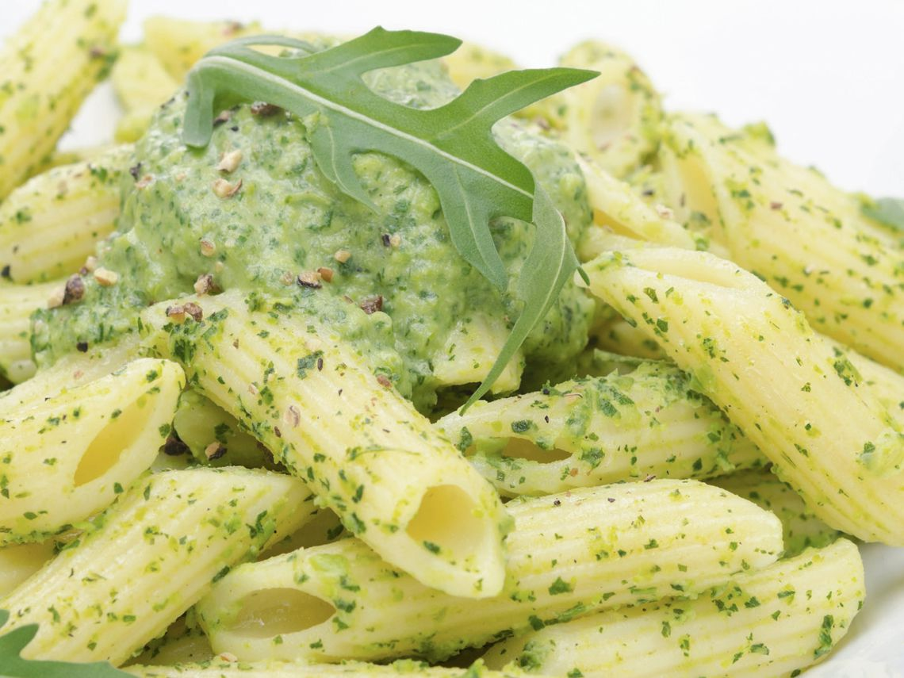

La historia de los macarrones
El macarrón (en italiano maccheroni) es un tipo de pasta italiana elaborado con agua, harina de trigo y, a veces, huevo, que suele tener forma de tubo alargado, conocidos como plumas.
El macarrón (en italiano maccheroni) es un tipo de pasta italiana elaborado con agua, harina de trigo y, a veces, huevo, que suele tener forma de tubo alargado, conocidos como plumas.
Según la leyenda,
Si te interesa la pasta pomodoro entra aquí
Receta de Macarrones con hummus: El hummus es una crema de garbanzos que se suele utilizar para untar o para dipear. Sin embargo, tiene otros muchos usos en la cocina - se puede utilizar en pizzas, para aliñar las ensaladas y platos de verdura y ¿por qué no? como salsa para la pasta. Esta receta de macarrones con hummus que traigo a RecetasGratis es muy rica y sencilla. Para servirla vamos a preparar una salsa de hummus para pasta cremosa con tomate y tomates cherry que te va a encantar. Además es un truco muy bueno y una forma deliciosa de incorporar las legumbres a tu dieta y aumentar su consumo.
Receta de Pasta al pesto genovese:La salsa pesto genovés es la auténtica salsa italiana, con albahaca, piñones, aceite y ajo. En general, se utiliza para condimentar pastas o ensaladas, aunque también puede usarse para carnes y pescados. En esta ocasión, hemos decidido preparar un delicioso plato de pasta al pesto genovese, ideal para sorprender cuando tenemos invitados.
Macarrones con carne picada y tomate Si quieres preparar una receta de pasta con tomate natural no te pierdas el paso a paso que nuestro amigo Edytor ha compartido con RecetasGratis de esta receta de macarrones boloñesa súper fácil de elaborar y con la que deleitaremos a todos nuestros comensales por su exquisito sabor. Sigue las instrucciones y consigue un platazo de macarrones con carne picada y tomate natural riquísimo para elaborar siempre que quieras.>
En este artículo puedes encontrar más recetas de macarrones
Esta es nuestra ubicación, nos puedes encontrar aquí.